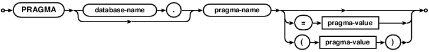
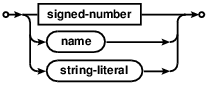

Choose any three.
|
|
PRAGMA 语句
PRAGMA Statements
PRAGMA语句是SQLite特有的SQL扩展，是用于修改SQlite库的运转或查询SQLite库的内部shuju（非表格）。PRAGMA语句对外使用和其他SQLite命令一样的接口（例如：SELECT、 INSERT），但是在下列几个重要的方面却有所不同：
The PRAGMA statement is an SQL extension specific to SQLite and used to
modify the operation of the SQLite library or to query the SQLite library for
internal (non-table) data. The PRAGMA statement is issued using the same
interface as other SQLite commands (e.g. SELECT, INSERT) but is
different in the following important respects:
- 在未来的SQLite发行版中个别的PRAGMA语句可能会被移除，并加入一些其他语句。这是不保证向后兼容的。
Specific pragma statements may be removed and others added in future releases of SQLite. There is no guarantee of backwards compatibility. - 如果发出一个未知的PRAGMA指令，不会生成错误信息。未知的PRAGMA语句只是简单的忽略了。这就是说，如果在PRAGMA语句中有拼写错误，那么库事实上是不会通知用户的。
No error messages are generated if an unknown pragma is issued. Unknown pragmas are simply ignored. This means if there is a typo in a pragma statement the library does not inform the user of the fact. - 一些PRAGMA语句会在SQL编译阶段产生影响，而不是执行阶段。这是说如果使用C语言的sqlite3_prepare()、
sqlite3_step()、sqlite3_finalize()API（或类似的封装接口），PRAGMA会在sqlite3_prepare()调用期间运行，而不是像其他普通SQL语句一样在sqlite3_step()调用中执行。
当然PRAGMA语句也可能像普通SQL语句一样在sqlite3_step()期间运行。不管怎样，PRAGMA在sqlite3_prepare()中还是 sqlite3_step()中运行，这依赖于PRAGMA指令和特定的SQLite版本。
Some pragmas take effect during the SQL compilation stage, not the execution stage. This means if using the C-language sqlite3_prepare(), sqlite3_step(), sqlite3_finalize() API (or similar in a wrapper interface), the pragma may run during the sqlite3_prepare() call, not during the sqlite3_step() call as normal SQL statements do. Or the pragma might run during sqlite3_step() just like normal SQL statements. Whether or not the pragma runs during sqlite3_prepare() or sqlite3_step() depends on the pragma and on the specific release of SQLite. - PRAGMA命令是SQLite特有的，并且不太可能兼容其他SQLite数据库引擎。
The pragma command is specific to SQLite and is very unlikely to be compatible with any other SQL database engine.
SQLite的C语言API中VFS提供的SQLITE_FCNTL_PRAGMA
文件控制实现，提供了添加新的PRAGMA语句或重载内置PRAGMA语句含义的机会。
The C-language API for SQLite provides the SQLITE_FCNTL_PRAGMA
file control which gives VFS implementations the
opportunity to add new PRAGMA statements or to override the meaning of
built-in PRAGMA statements.
PRAGMA命令语法
PRAGMA command syntax

一个PRAGMA可以接受零个或一个参数。参数既可能是位于一对小括号中，也可能是使用一个等号与PRAGMA名字分隔开。两种语法获得的是同样的结果。在血多PRAGMA中，参数是一个布尔值，布尔值可以是下列中的一个：
A pragma can take either zero or one argument. The argument is may be either
in parentheses or it may be separated from the pragma name by an equal sign.
The two syntaxes yield identical results.
In many pragmas, the argument is a boolean. The boolean can be one of:
0 no false off
关键词可以选择使用引号包起来。（例如：'yes' [FALSE]。）许多PRAGMA的参数是一个字符串。当PRAGMA获得一个关键词参数时，这通常也会获得一个等价的数值。例如“0”和“no”是同样的含义，“1”和“yes”也是一样。当查询设置的值时，许多PRAGMA会返回一个数字，而不是关键词。
Keyword arguments can optionally appear in quotes.
(Example: 'yes' [FALSE].) Some pragmas
takes a string literal as their argument. When pragma takes a keyword
argument, it will usually also take a numeric equivalent as well.
For example, "0" and "no" mean the same thing, as does "1" and "yes".
When querying the value of a setting, many pragmas return the number
rather than the keyword.
一个PRAGMA可以在其名字之前加一个可选的数据库名。这个数据库名可以是一个ATTACH数据库的名字也可以是“main”或“temp”以对应主库和临时库。如果忽略了数据库名，会假定是“main”。在血多PRAGMA中，数据库名是没有意义的，会直接被忽略。
A pragma may have an optional database name before the pragma name.
The database name is the name of an ATTACH-ed database or it can be
"main" or "temp" for the main and the TEMP databases. If the optional
database name is omitted, "main" is assumed. In some pragmas, the database
name is meaningless and is simply ignored.
PRAGMA列表
List Of PRAGMAs
注意：
Notes:
- 上面列表中名字上又删除线的PRAGMA是不建议使用的，这些指令只是为了历史的兼容性而继续维护。在新的应用程序中不要使用不推荐的PRAGMA。并且应该尽早从已有的应用中移除不推荐的PRAGMA。
Pragmas whose names are marked through in the list above are deprecated that are maintained for historical compatibility only. Do not use the deprecated pragmas in new applications. Remove deprecated pragmas from existing applications at your earliest opportunity. - 这些PRAGMA适用于调试SQLite自身的，只有当使用SQLITE_DEBUG参数编译的SQLite这些指令才有效果。
These pragmas are used for debugging SQLite itself and are only available when SQLite is compiled using SQLITE_DEBUG.
PRAGMA application_id;
PRAGMA application_id = integer ;
application_id PRAGMA是用于查询或者设置一个32位无符号大端的“Application ID”整数。其位于数据库头部偏移68的位置。应用程序如果使用SQLite作为其应用文件格式时，应当为Application ID设置一个唯一的整数，这样可以让类似file(1)一类的工具可以确定这个特殊的文件类型，而不是只认为是一个“SQLite3数据库”。
在SQLite的源码库中的magic.txt文件中可以看到一个已经分配的application id列表。
The application_id PRAGMA is used to query or set the 32-bit
unsigned big-endian "Application ID" integer located at offset
68 into the database header. Applications that use SQLite as their
application file-format should set the Application ID integer to
a unique integer so that utilities such as
file(1) can determine the specific
file type rather than just reporting "SQLite3 Database". A list of
assigned application IDs can be seen by consulting the
magic.txt file in the SQLite source repository.
PRAGMA auto_vacuum;
PRAGMA auto_vacuum =
0 | NONE | 1 | FULL | 2 | INCREMENTAL;
查询或设置数据库的自动压缩（auto-vacuum）。
Query or set the auto-vacuum status in the database.
只要没有使用SQLITE_DEFAULT_AUTOVACUUM编译选项，那么默认的自动压缩设置是0或“none”。设置“none”表示禁用自动压缩。在禁用自动压缩的情况下，当从数据库中删除数据时，数据库文件会继续保持原有的尺寸。未使用的数据库文件页会被加入到 "空闲列表"中，并在后续的插入操作中重用这些页。所以不会有数据库文件空间丢失，只是数据库文件不会减小。在这种模式下，可以使用VACUUM命令来重建整个数据库文件，并回收未使用的磁盘空间。
The default setting for auto-vacuum is 0 or "none",
unless the SQLITE_DEFAULT_AUTOVACUUM compile-time option is used.
The "none" setting means that auto-vacuum is disabled.
When auto-vacuum is disabled and data is deleted data from a database,
the database file remains the same size. Unused database file
pages are added to a "freelist" and reused for subsequent inserts. So
no database file space is lost. However, the database file does not
shrink. In this mode the VACUUM
command can be used to rebuild the entire database file and
thus reclaim unused disk space.
当自动压缩模式设置为1或“full”时，空闲列表页会被移动到数据库文件的末尾，并且在每次事务提交时，数据库文件都会进行缩短来删除空闲列表页。自动压缩不会像VACUUM命令一样对数据库进行碎片整理，也不会重新组装分散的数据库页。事实上，由于其在文件中移动页，所以自动压缩通常会使碎片更加严重。
When the auto-vacuum mode is 1 or "full", the freelist pages are
moved to the end of the database file and the database file is truncated
to remove the freelist pages at every transaction commit.
Note, however, that auto-vacuum only truncates the freelist pages
from the file. Auto-vacuum does not defragment the database nor
repack individual database pages the way that the
VACUUM command does. In fact, because
it moves pages around within the file, auto-vacuum can actually
make fragmentation worse.
只有当数据库中存储了额外的信息来帮助每个数据库页反向寻找到对其的引用时才能做到自动压缩。所以，自动压缩必须在在创建任何表格之前启用。如果在表已经创建之后，是无法启用或者禁用自动压缩的。
Auto-vacuuming is only possible if the database stores some
additional information that allows each database page to be
traced backwards to its referrer. Therefore, auto-vacuuming must
be turned on before any tables are created. It is not possible
to enable or disable auto-vacuum after a table has been created.
当自动压缩模式设置为2或者“incremental”时，数据库文件中会加入自动压缩所需的额外信息，但是不会像auto_vacuum=full一样在每次提交的时候都自动压缩，在incremental模式下，有一个单独的incremental_vacuumPRAGMA用来触发自动压缩。
When the value of auto-vacuum is 2 or "incremental" then the additional
information needed to do auto-vacuuming is stored in the database file
but auto-vacuuming does not occur automatically at each commit as it
does with auto_vacuum=full. In incremental mode, the separate
incremental_vacuum pragma must
be invoked to cause the auto-vacuum to occur.
数据库连接可以任何时候在full和incremental自动压缩模式之间进行切换。但是想从“none”改为“full”或“incremental”只能在数据库是全新的时候（没有创建过表）在可以，或者通过运行VACUUM命令。当希望修改自动压缩模式时，首先使用auto_vacuum PRAGMA设置期望的模式，然后执行VACUUM命令重新整理整个数据库文件。当从“full”或“incremental”修改回“none”时，总是必须运行VACUUM，即使是空数据库也需要。
The database connection can be changed between full and incremental
autovacuum mode at any time. However, changing from
"none" to "full" or "incremental" can only occur when the database
is new (no tables
have yet been created) or by running the VACUUM command. To
change auto-vacuum modes, first use the auto_vacuum pragma to set
the new desired mode, then invoke the VACUUM command to
reorganize the entire database file. To change from "full" or
"incremental" back to "none" always requires running VACUUM even
on an empty database.
当执行没有参数的auto_vacuum时，会返回当前的auto_vacuum模式。
When the auto_vacuum pragma is invoked with no arguments, it
returns the current auto_vacuum mode.
PRAGMA automatic_index;
PRAGMA automatic_index = boolean;
对automatic indexing的查询、设置和清除。
Query, set, or clear the automatic indexing capability.
Automatic indexing从3.7.17版开始模式是启用，但是在未来的发行版中可能会修改。
Automatic indexing is enabled by default as of version 3.7.17,
but this might change in future releases of SQLite.
PRAGMA busy_timeout;
PRAGMA busy_timeout = milliseconds;
查询或修改busy timeout设置。这个PRAGMA是sqlite3_busy_timeout() C语言接口的另一个选择，这个PRAGMA主要是提供给那些使用语言绑定访问数据库的，而又没有提供直接访问sqlite3_busy_timeout()接口的环境使用。
Query or change the setting of the
busy timeout.
This pragma is an alternative to the sqlite3_busy_timeout() C-language
interface which is made available as a pragma for use with language
bindings that do not provide direct access to sqlite3_busy_timeout().
PRAGMA cache_size;
PRAGMA cache_size = pages;
PRAGMA cache_size = -kibibytes;
查询或者修改推荐的SQLite每次打开数据库时一次性加载到内存中的最大数据库磁盘页数量。不管怎样，这个建议会在Application Defined Page Cache判定时进行参考。默认的页缓存是内置于SQLite中的，但是在应用定义的页缓存实现中，可能会选择按照不同的方式来解读推荐的缓存大小，或者直接一起忽略掉。
默认的推荐缓存大小是2000页。
Query or change the suggested maximum number of database disk pages
that SQLite will hold in memory at once per open database file. Whether
or not this suggestion is honored is at the discretion of the
Application Defined Page Cache.
The default page cache that is built into SQLite honors the request,
however alternative application-defined page cache implementations
may choose to interpret the suggested cache size in different ways
or to ignore it all together.
The default suggested cache size is 2000 pages.
如果参数N是正数，那么建议缓存大小会设置为N。如果参数N是负数，那么缓存页的数量会被调整为大约使用N*1024字节内存。注意向后兼容性：缓存大小使用负数N的行为在3.7.10版之前有所不同。在3.7.9和之前的版本中，缓存页数会被精确设置为N。
If the argument N is positive then the suggested cache size is set
to N. If the argument N is negative, then the
number of cache pages is adjusted to use approximately N*1024 bytes
of memory.
Backwards compatibility note:
The behavior of cache_size with a negative N
was different in SQLite versions prior to 3.7.10. In
version 3.7.9 and earlier, the number of pages in the cache was set
to the absolute value of N.
如果你使用cache_size PRAGMA修改缓存大小，那么这个改变只会在当前会话中有效。当数据库关闭再重新打开后，缓存大小会恢复到默认值。
When you change the cache size using the cache_size pragma, the
change only endures for the current session. The cache size reverts
to the default value when the database is closed and reopened.
PRAGMA cache_spill;
PRAGMA cache_spill=boolean;
cache_spill PRAGMA可以允许或禁止分页程序在事物过程中溢出脏缓存页到数据库文件中。在大多数应用中cache_spill是默认开启的，并应当保持这种方式，因为缓存溢出通常是有益的。可是，缓存溢出对在数据库文件上获取EXCLUSIVE 锁有副作用。因此，一些包含大而长事务的应用可能会想要禁用缓存溢出，以此来保证应用能在数据库上获取一个排它锁直到事务COMMIT。
The cache_spill pragma enables or disables the ability of the pager
to spill dirty cache pages to the database file in the middle of a
transaction. Cache_spill is enabled by default and most applications
should leave it that way as cache spilling is usually advantageous.
However, a cache spill has the side-effect of acquiring an
EXCLUSIVE lock on the database file. Hence, some applications that
have large long-running transactions may want to disable cache spilling
in order to prevent the application from acquiring an exclusive lock
on the database until the moment that the transaction COMMITs.
PRAGMA case_sensitive_like = boolean;
修改LIKE操作符的默认行为是否忽略ASCII字符大小写。因此，默认情况下'a' LIKE 'A'是true。case_sensitive_like PRAGMA依照参数值来设置一个新的应用定义的LIKE函数，用来完成区分大小写或忽略大小写。当case_sensitive_like禁用时，LIKE按照默认行为处理，当case_sensitive_like启用时，则区分大小写。所以，例如'a' LIKE 'A' 是false， 但是 'a' LIKE 'a' 已然是true。
The default behavior of the LIKE operator is to ignore case
for ASCII characters. Hence, by default 'a' LIKE 'A' is
true. The case_sensitive_like pragma installs a new application-defined
LIKE function that is either case sensitive or insensitive depending
on the value of the case_sensitive_like pragma.
When case_sensitive_like is disabled, the default LIKE behavior is
expressed. When case_sensitive_like is enabled, case becomes
significant. So, for example,
'a' LIKE 'A' is false but 'a' LIKE 'a' is still true.
这个PRAGMA使用sqlite3_create_function()来重载LIKE和GLOB函数，这可能会覆盖应用之前实现并注册的LIKE和GLOB函数。
This pragma uses sqlite3_create_function() to overload the
LIKE and GLOB functions, which may override previous implementations
of LIKE and GLOB registered by the application.
PRAGMA checkpoint_fullfsync
PRAGMA checkpoint_fullfsync = boolean;
查询或修改checkpoint操作中fullfsync标志。如果设置了这个标志，那么在支持F_FULLFSYNC的系统中的checkpoint操作过程中会使用F_FULLFSYNC同步方法。checkpoint_fullfsync标志默认是关闭的。只有MacOS X支持F_FULLFSYNC。
Query or change the fullfsync flag for checkpoint operations.
If this flag is set, then the F_FULLFSYNC syncing method is used
during checkpoint operations on systems that support F_FULLFSYNC.
The default value of the checkpoint_fullfsync flag
is off. Only Mac OS-X supports F_FULLFSYNC.
如果设置了fullfsync标志，那么所有的同步操作都会使用F_FULLFSYNC，而checkpoint_fullfsync设置则忽略了。
If the fullfsync flag is set, then the F_FULLFSYNC syncing
method is used for all sync operations and the checkpoint_fullfsync
setting is irrelevant.
PRAGMA collation_list;
返回当前数据库连接中定义的排序器列表。
Return a list of the collating sequences defined for the current
database connection.
PRAGMA compile_options;
这个PRAGMA返回在编译SQLite时使用的编译期选项名字，每个选项一行。返回的结果中忽略"SQLITE_" 前缀的选项。参见sqlite3_compileoption_get()C/C++接口和sqlite_compileoption_get() SQL函数。
This pragma returns the names of compile-time options used when
building SQLite, one option per row. The "SQLITE_" prefix is omitted
from the returned option names. See also the
sqlite3_compileoption_get() C/C++ interface and the
sqlite_compileoption_get() SQL functions.
PRAGMA count_changes;
PRAGMA count_changes = boolean;
查询或修改count-changes 标志。通常，当没有设置count-changes标志时，INSERT、UPDATE和DELETE语句不会返回数据。当设置了count-changes时，这些命令都会返回一行包含一个整数的记录——该命令插入、修改或删除的行数。返回的修改数中不包含触发器完成的插入、修改或删除和外键行为自动完成的改动。
Query or change the count-changes flag. Normally, when the
count-changes flag is not set, INSERT, UPDATE and DELETE statements
return no data. When count-changes is set, each of these commands
returns a single row of data consisting of one integer value - the
number of rows inserted, modified or deleted by the command. The
returned change count does not include any insertions, modifications
or deletions performed by triggers, or any changes made automatically
by foreign key actions.
其他获取修改行数的方法有sqlite3_changes()和sqlite3_total_changes()接口。这之间有些微妙的区别。当视图上的INSTEAD OF 触发器执行INSERT、UPDATE或DELETE时，count_changes PRAGMA会返回视图中触发触发器的行数，而sqlite3_changes() 和
sqlite3_total_changes()则不会。
Another way to get the row change counts is to use the
sqlite3_changes() or sqlite3_total_changes() interfaces.
There is a subtle different, though. When an INSERT, UPDATE, or
DELETE is run against a view using an INSTEAD OF trigger,
the count_changes pragma reports the number of rows in the view
that fired the trigger, whereas sqlite3_changes() and
sqlite3_total_changes() do not.
这个PRAGMA已经不推荐使用了，只是为了向后兼容性而没有移除。新的应用程序应当避免使用这个PRAGMA。老应用也应当在最近的更新中停止使用这个PRAGMA。在编译SQLite时使用SQLITE_OMIT_DEPRECATED选项可以忽略这个PRAGMA。
This pragma is deprecated and exists
for backwards compatibility only. New applications
should avoid using this pragma. Older applications should discontinue
use of this pragma at the earliest opportunity. This pragma may be omitted
from the build when SQLite is compiled using SQLITE_OMIT_DEPRECATED.
PRAGMA data_store_directory;
PRAGMA data_store_directory = 'directory-name';
查询或修改全局变量sqlite3_data_directory的值，视窗操作系统接口后端使用它描述的相对路径来决定数据库文件的存储位置。
Query or change the value of the sqlite3_data_directory global
variable, which windows operating-system interface backends use to
determine where to store database files specified using a relative
pathname.
修改data_store_directory设置不是线程安全的。永远不要在应用中其他线程正在运行任何SQLite接口的时候，同时修改data_store_directory设置。如果这么做，结果将是未知的行为。修改data_store_directory设置所改动的sqlite3_data_directory全局变量并没有使用互斥体来保护。
Changing the data_store_directory setting is not threadsafe.
Never change the data_store_directory setting if another thread
within the application is running any SQLite interface at the same time.
Doing so results in undefined behavior. Changing the data_store_directory
setting writes to the sqlite3_data_directory global
variable and that global variable is not protected by a mutex.
这个设置只是提供给WinRT这种OS中没有改变读取或修改当前工作目录机制的环境。在其它环境中使用这个PRAGMA是不推荐的，并且可能会在未来的发行版中被禁止。
This facility is provided for WinRT which does not have an OS
mechanism for reading or changing the current working directory.
The use of this pragma in any other context is discouraged and may
be disallowed in future releases.
这个PRAGMA已经不推荐使用了，只是为了向后兼容性而没有移除。新的应用程序应当避免使用这个PRAGMA。老应用也应当在最近的更新中停止使用这个PRAGMA。在编译SQLite时使用SQLITE_OMIT_DEPRECATED选项可以忽略这个PRAGMA。
This pragma is deprecated and exists
for backwards compatibility only. New applications
should avoid using this pragma. Older applications should discontinue
use of this pragma at the earliest opportunity. This pragma may be omitted
from the build when SQLite is compiled using SQLITE_OMIT_DEPRECATED.
PRAGMA database_list;
这个PRAGMA会查询当前数据库连接上附加的数据库，并每个库一行记录的返回数据。第二列如果是主库文件则是“main”，存储TEMP对象的数据库文件则是“temp”，或者就是ATTACH数据库的名字。第三列是数据库文件自身的名字，如果没有关联的文件，则是一个空字符串。
This pragma works like a query to return one row for each database
attached to the current database connection.
The second column is the "main" for the main database file, "temp"
for the database file used to store TEMP objects, or the name of the
ATTACHed database for other database files.
The third column is the name of the database file itself, or an empty
string if the database is not associated with a file.
PRAGMA default_cache_size;
PRAGMA default_cache_size = Number-of-pages;
这个PRAGMA用来查询或设置每次打开数据库文件时分配的磁盘缓存页数的推荐最大值。与cache_size的不同之处在于这里设置的值对所有数据库连接都生效。这个默认缓存大小值是一个4字节的大端整数，存储在数据库文件头部偏移48的位置。
This pragma queries or sets the suggested maximum number of pages
of disk cache that will be allocated per open database file.
The difference between this pragma and cache_size is that the
value set here persists across database connections.
The value of the default cache size is stored in the 4-byte
big-endian integer located at offset 48 in the header of the
database file.
这个PRAGMA已经不推荐使用了，只是为了向后兼容性而没有移除。新的应用程序应当避免使用这个PRAGMA。老应用也应当在最近的更新中停止使用这个PRAGMA。在编译SQLite时使用SQLITE_OMIT_DEPRECATED选项可以忽略这个PRAGMA。
This pragma is deprecated and exists
for backwards compatibility only. New applications
should avoid using this pragma. Older applications should discontinue
use of this pragma at the earliest opportunity. This pragma may be omitted
from the build when SQLite is compiled using SQLITE_OMIT_DEPRECATED.
PRAGMA defer_foreign_keys
PRAGMA defer_foreign_keys = boolean;
当defer_foreign_keys PRAGMA启用时，会强制所有的外键约束推迟到最外层的事务提交完成。
defer_foreign_keys PRAGMA默认是关闭的，所以外键约束只有在使用"DEFERRABLE INITIALLY DEFERRED"创建时才会延时。defer_foreign_keys PRAGMA会在每次COMMIT或ROLLBACK时自动关闭。因此，defer_foreign_keys PRAGMA必须在每个事务中单独开启。当然，这个PRAGMA只有在启用了外键约束的时候才有意义。
When the defer_foreign_keys PRAGMA is on,
enforcement of all foreign key constraints is delayed until the
outermost transaction is committed. The defer_foreign_keys pragma
defaults to OFF so that foreign key constraints are only deferred if
they are created as "DEFERRABLE INITIALLY DEFERRED". The
defer_foreign_keys pragma is automatically switched off at each
COMMIT or ROLLBACK. Hence, the defer_foreign_keys pragma must be
separately enabled for each transaction. This pragma is
only meaningful if foreign key constraints are enabled, of course.
在事务中，如果有延迟和未完成的外键约束可以使用sqlite3_db_status(db,SQLITE_DBSTATUS_DEFERRED_FKS,...)C接口来判断。
The sqlite3_db_status(db,SQLITE_DBSTATUS_DEFERRED_FKS,...)
C-language interface can be used during a transaction to determine
if there are deferred and unresolved foreign key constraints.
PRAGMA empty_result_callbacks;
PRAGMA empty_result_callbacks = boolean;
查询或修改empty-result-callbacks标志。
Query or change the empty-result-callbacks flag.
empty-result-callbacks标志只会影响a href="c3ref/exec.html">sqlite3_exec() API。通常，如果清除了empty-result-callbacks标志，那么提供给sqlite3_exec()的回调函数在命令返回零行数据时是不会执行的。在这种情况下，如果设置了empty-result-callbacks标志，那么会执行一次回调函数，其第三个参数会设置为0（NULL）。这可以让程序在查询没有返回数据的情况下也可以使用sqlite3_exec() API来获取列名。
The empty-result-callbacks flag affects the sqlite3_exec() API only.
Normally, when the empty-result-callbacks flag is cleared, the
callback function supplied to the sqlite3_exec() is not invoked
for commands that return zero rows of data. When empty-result-callbacks
is set in this situation, the callback function is invoked exactly once,
with the third parameter set to 0 (NULL). This is to enable programs
that use the sqlite3_exec() API to retrieve column-names even when
a query returns no data.
这个PRAGMA已经不推荐使用了，只是为了向后兼容性而没有移除。新的应用程序应当避免使用这个PRAGMA。老应用也应当在最近的更新中停止使用这个PRAGMA。在编译SQLite时使用SQLITE_OMIT_DEPRECATED选项可以忽略这个PRAGMA。
This pragma is deprecated and exists
for backwards compatibility only. New applications
should avoid using this pragma. Older applications should discontinue
use of this pragma at the earliest opportunity. This pragma may be omitted
from the build when SQLite is compiled using SQLITE_OMIT_DEPRECATED.
PRAGMA encoding;
PRAGMA encoding = "UTF-8";
PRAGMA encoding = "UTF-16";
PRAGMA encoding = "UTF-16le";
PRAGMA encoding = "UTF-16be";
第一种形式中，如果主库已经创建，那么这个PRAGMA会返回主库使用的文本编码， "UTF-8"、 "UTF-16le"（小端 UTF-16 编码） 或 "UTF-16be"（大端 UTF-16 编码）之一。如果主库还没有创建，那么返回值是如果使用当前回话来创建数据库，则用来创建主库的文件编码。
In first form, if the main database has already been
created, then this pragma returns the text encoding used by the
main database, one of "UTF-8", "UTF-16le" (little-endian UTF-16
encoding) or "UTF-16be" (big-endian UTF-16 encoding). If the main
database has not already been created, then the value returned is the
text encoding that will be used to create the main database, if
it is created by this session.
这个PRAGMA的第二到第五个形式用来设置如果使用当前会话来创建主库时所使用的编码。字符串"UTF-16"表示"使用本地机器字节序的UTF-16编码"。在数据库已经创建以后是无法改变文本编码的，如果试图去这么做只会被静默的忽略掉。
The second through fifth forms of this pragma
set the encoding that the main database will be created with if
it is created by this session. The string "UTF-16" is interpreted
as "UTF-16 encoding using native machine byte-ordering". It is not
possible to change the text encoding of a database after it has been
created and any attempt to do so will be silently ignored.
一旦为数据库设置了编码，则无法再改动了。
Once an encoding has been set for a database, it cannot be changed.
使用ATTACH命令创建的数据库会使用和主库一致的编码。ATTACH一个和主库编码不同的数据库会导致失败。
Databases created by the ATTACH command always use the same encoding
as the main database. An attempt to ATTACH a database with a different
text encoding from the "main" database will fail.
PRAGMA foreign_key_check;
PRAGMA foreign_key_check(table-name);
foreign_key_check PRAGMA 用来检测数据库或名为"table-name"的表中所有违反外键约束的记录，返回结果每行一条违反记录。每行结果有4列。第一列是包含REFERENCES子句的表的名字。第二列是包含无效REFERENCES子句的行的rowid。第三列是引用的表名。第四列是失败的特定外键约束的序号。foreign_key_check PRAGMA输出的第四列的数字与foreign_key_list PRAGMA输出的第一列值相同。当指定了"table-name"时，只会检测table-name表CREATE TABLE语句中REFERENCES子句创建的外键约束。
The foreign_key_check pragma checks the database, or the table
called "table-name", for
foreign key constraints that are violated and returns one row of
output for each violation. There are four columns in each result row.
The first column is the name of the table that contains the REFERENCES
clause. The second column is the rowid of the row that
contains the invalid REFERENCES clause. The third column is the name
of the table that is referred to. The fourth column is the index of
the specific foreign key constraint that failed. The fourth column
in the output of the foreign_key_check pragma is the same integer as
the first column in the output of the foreign_key_list pragma.
When a "table-name" is specified, the only foreign key constraints
checked are those created by REFERENCES clauses in the
CREATE TABLE statement for table-name.
PRAGMA foreign_key_list(table-name);
这个PRAGMA返回"table-name"表的CREATE TABLE语句中REFERENCES子句创建的外键约束，每行一条约束记录。
This pragma returns one row for each foreign key constraint
created by a REFERENCES clause in the CREATE TABLE statement of
table "table-name".
PRAGMA foreign_keys;
PRAGMA foreign_keys = boolean;
查询、设置或取消是否执行外键约束。
Query, set, or clear the enforcement of foreign key constraints.
这个指令在事务中是无效的，外键约束的开启与关闭只能在没有未完成的BEGIN 或 SAVEPOINT条件下执行。
This pragma is a no-op within a transaction; foreign key constraint
enforcement may only be enabled or disabled when there is no pending
BEGIN or SAVEPOINT.
修改外键设置会影响所有使用数据库连接执行的预编译语句，包括在改变之前完成预编译的。任何使用遗留的sqlite3_prepare()接口进行预编译的语句在外键设置改动后都会失败并返回SQLITE_SCHEMA错误。
Changing the foreign_keys setting affects the execution of
all statements prepared
using the database connection, including those prepared before the
setting was changed. Any existing statements prepared using the legacy
sqlite3_prepare() interface may fail with an SQLITE_SCHEMA error
after the foreign_keys setting is changed.
自SQLite3.6.19版以后，外键约束的默认设置是关闭。不过在SQLite未来的发行版中这个可能会改变。外键执行的默认设置可以再编译期使用SQLITE_DEFAULT_FOREIGN_KEYS预处理宏来指定。为了尽量减少未来的问题，应用程序应当把设置外键执行标志作为必须的事情，而不是依赖于默认设置。
As of SQLite version 3.6.19, the default setting for foreign
key enforcement is OFF. However, that might change in a future
release of SQLite. The default setting for foreign key enforcement
can be specified at compile-time using the SQLITE_DEFAULT_FOREIGN_KEYS
preprocessor macro. To minimize future problems, applications should
set the foreign key enforcement flag as required by the application
and not depend on the default setting.
PRAGMA freelist_count;
返回数据库文件中未使用页的数量。
Return the number of unused pages in the database file.
PRAGMA full_column_names;
PRAGMA full_column_names = boolean;
查询或修改full_column_names标志。这个标志和short_column_names标志一起决定SQLite为SELECT语句的结果列分配名字的方法。结果列的按顺序运用如下的规则来命名：
Query or change the full_column_names flag. This flag together
with the short_column_names flag determine
the way SQLite assigns names to result columns of SELECT statements.
Result columns are named by applying the following rules in order:
如果结果中有AS子句，那么这列的名字就是AS子句右边的值。
If there is an AS clause on the result, then the name of the column is the right-hand side of the AS clause.如果结果是一个普通表达式，不仅仅是一个原表中的列名，那么结果的名字就是这个表达式文本。
If the result is a general expression, not a just the name of a source table column, then the name of the result is a copy of the expression text.如果开启了short_column_names PRAGMA，那么结果的名字就是原表中不包含原表名前缀的列名：COLUMN。
If the short_column_names pragma is ON, then the name of the result is the name of the source table column without the source table name prefix: COLUMN.如果PRAGMA short_column_names 和 full_column_names 都关闭了，那么运用规则2。
If both pragmas short_column_names and full_column_names are OFF then case (2) applies.列的名字是原表名加原列名：TABLE.COLUMN。
The name of the result column is a combination of the source table and source column name: TABLE.COLUMN
这个PRAGMA已经不推荐使用了，只是为了向后兼容性而没有移除。新的应用程序应当避免使用这个PRAGMA。老应用也应当在最近的更新中停止使用这个PRAGMA。在编译SQLite时使用SQLITE_OMIT_DEPRECATED选项可以忽略这个PRAGMA。
This pragma is deprecated and exists
for backwards compatibility only. New applications
should avoid using this pragma. Older applications should discontinue
use of this pragma at the earliest opportunity. This pragma may be omitted
from the build when SQLite is compiled using SQLITE_OMIT_DEPRECATED.
PRAGMA fullfsync
PRAGMA fullfsync = boolean;
查询或修改fullfsync标志。这个标志决定是否在支持F_FULLFSYNC的系统中使用F_FULLFSYNC同步方法。fullfsync标志的默认值是关闭。只有Mac OS X支持F_FULLFSYNC。
Query or change the fullfsync flag. This flag
determines whether or not the F_FULLFSYNC syncing method is used
on systems that support it. The default value of the fullfsync flag
is off. Only Mac OS X supports F_FULLFSYNC.
参见checkpoint_fullfsync。
See also checkpoint_fullfsync.
PRAGMA ignore_check_constraints = boolean;
这个PRAGMA启用或禁用CHECK约束的执行。默认设置是禁用，意味着默认是执行CHECK约束的。
This pragma enables or disables the enforcement of CHECK constraints.
The default setting is off, meaning that CHECK constraints are
enforced by default.
PRAGMA incremental_vacuum(N);
incremental_vacuum PRAGMA会从空闲列表中移除最多N个页。数据库文件会缩小同样的大小。如果数据库不是在auto_vacuum=incremental模式或者空闲列表中没有页，那么incremental_vacuum PRAGMA不会产生效果。如果空闲列表中的页数少于N或者N小于1或者彻底忽略N，那么整个空闲列表都会被清除。
The incremental_vacuum pragma causes up to N pages to
be removed from the freelist. The database file is truncated by
the same amount. The incremental_vacuum pragma has no effect if
the database is not in
auto_vacuum=incremental mode
or if there are no pages on the freelist. If there are fewer than
N pages on the freelist, or if N is less than 1, or
if N is omitted entirely, then the entire freelist is cleared.
PRAGMA index_info(index-name);
这个PRAGMA返回指定的索引中的列，每行一列。结果的第一列是这一列在索引中的排行。结果的第二列是这一列在表中的排行，结果的第三列是建索引的这一列的名字。
This pragma returns one row each column in the named index.
The first column of the result is the rank of the column within the index.
The second column of the result is the rank of the column within the
table. The third column of output is the name of the column being indexed.
PRAGMA index_list(table-name);
这个PRAGMA返回给定表上附属的索引，每行一个索引。结果的列包括索引名和一个说明是否是UNIQUE索引的标志。
This pragma returns one row for each index associated with the
given table.
Columns of the result set include the
index name and a flag to indicate whether or not the index is UNIQUE.
PRAGMA integrity_check;
PRAGMA integrity_check(N)
这个PRAGMA会检查整个数据库的完整性。integrity_check PRAGMA会寻找乱序的记录、丢失的页、畸形的记录和损坏的索引。如果integrity_check PRAGMA发现了问题，会返回一个字符串（多行记录，每行一列）来说明问题。PRAGMA integrity_check 在分析结束前最多会返回N个错误，N的默认值是100。如果PRAGMA integrity_check没有发现错误，会翻译一行记录，值是“ok”。
This pragma does an integrity check of the entire database. The
integrity_check pragma
looks for out-of-order records, missing pages, malformed records, and
corrupt indices.
If the integrity_check pragma finds problems, strings are returned
(as multiple rows with a single column per row) which describe
the problems. Pragma integrity_check will return at most N
errors will be reported before the analysis quits, with N defaulting
to 100. If pragma integrity_check finds no errors are found, a
single row with the value 'ok' is returned.
PRAGMA journal_mode;
PRAGMA database.journal_mode;
PRAGMA journal_mode
= DELETE | TRUNCATE | PERSIST | MEMORY | WAL | OFF
PRAGMA database.journal_mode
= DELETE | TRUNCATE | PERSIST | MEMORY | WAL | OFF
这个PRAGMA可以查询或设置当前数据库连接上附属的数据库的日志模式。
This pragma queries or sets the journal mode for databases
associated with the current database connection.
这个PRAGMA的前两种形式用于查询database的当前日志模式。当database被省略了，那么会查询主库。
The first two forms of this pragma query the current journaling
mode for database. When database is omitted, the
"main" database is queried.
后两种形式是用于修改日志模式的。第四种形式修改指定数据库连接名的日志模式。使用“main”指定主数据库（使用原始的sqlite3_open()、sqlite3_open16()或sqlite3_open_v2()接口调用打开的数据库），用“temp”指定持有TEMP表的数据库。第三种形式修改链接上附属的所有数据库的日志模式。会返回新日志模式。如果日志模式无法修改，会返回原始的日志模式。
The last two forms change the journaling mode. The 4th form
changes the journaling mode for a specific database connection named.
Use "main" for the main database (the database that was opened by
the original sqlite3_open(), sqlite3_open16(), or
sqlite3_open_v2() interface call) and use "temp" for database
that holds TEMP tables. The 3rd form changes the journaling mode
on all databases attached to the connection.
The new journal mode is returned. If the journal mode
could not be changed, the original journal mode is returned.
标准行为是DELETE 日志模式。在DELETE模式中，在每个事务结束时会删除回滚日志。事实上，删除操作是触发事务提交的行为（更多信息参见文档SQLite中的原子提交）。
The DELETE journaling mode is the normal behavior. In the DELETE
mode, the rollback journal is deleted at the conclusion of each
transaction. Indeed, the delete operation is the action that causes
the transaction to commit.
(See the document titled
Atomic Commit In SQLite for additional detail.)
在TRUNCATE日志模式中，通过将回滚日志截短为零长度来提交事务，而不是删除文件。在许多系统中，截短文件要比删除文件快的多，这是应为包含文件的目录不需要修改。
The TRUNCATE journaling mode commits transactions by truncating
the rollback journal to zero-length instead of deleting it. On many
systems, truncating a file is much faster than deleting the file since
the containing directory does not need to be changed.
PERSIST日志模式会阻止在事务结尾删除回滚日志，而是使用零来覆写日志头部。这可以防止其他数据库连接回滚这个日志。PERSIST日志模式对于那些删除和截短文件开销大于给文件第一块写入零的平台是十分有用的优化。参见PRAGMA journal_size_limit 和 SQLITE_DEFAULT_JOURNAL_SIZE_LIMIT。
The PERSIST journaling mode prevents the rollback journal from
being deleted at the end of each transaction. Instead, the header
of the journal is overwritten with zeros. This will prevent other
database connections from rolling the journal back. The PERSIST
journaling mode is useful as an optimization on platforms where
deleting or truncating a file is much more expensive than overwriting
the first block of a file with zeros. See also:
PRAGMA journal_size_limit and SQLITE_DEFAULT_JOURNAL_SIZE_LIMIT.
MEMORY日志模式中将回滚日志存储在不稳定的RAM中。这节约了磁盘I/O但是是以数据库安全性和完整性为代价的。如果使用MEMORY日志模式SQLite的应用在事务中发生崩溃，那么数据库就很可能发生损坏。
The MEMORY journaling mode stores the rollback journal in
volatile RAM. This saves disk I/O but at the expense of database
safety and integrity. If the application using SQLite crashes in
the middle of a transaction when the MEMORY journaling mode is set,
then the database file will very likely go corrupt.
WAL日志模式使用一个write-ahead log替代回滚日志来实现事务。WAL日志模式是稳固的，一旦设置了，它可以在多个数据库连接关闭和打开数据库时保持有效。
只有SQLite3.7.0及之后的版本可以访问WAL日志模式的数据库。
The WAL journaling mode uses a write-ahead log instead of a
rollback journal to implement transactions. The WAL journaling mode
is persistent; after being set it stays in effect
across multiple database connections and after closing and
reopening the database. A database in WAL journaling mode
can only be accessed by SQLite version 3.7.0 or later.
OFF日志模式彻底禁用了回滚日志。不会创建回滚日志，也就不会删除回滚日志。OFF日志模式使原子提交和SQLite的回滚能力失效了。ROLLBACK命令也没有意义了，其行为变得未知了。所以当使用OFF日志模式时，应用程序应当避免使用ROLLBACK命令。当设置了OFF日志模式时，如果应用在事务中间发生崩溃，那么数据库文件很可能会发生损坏。
The OFF journaling mode disables the rollback journal completely.
No rollback journal is ever created and hence there is never a rollback
journal to delete. The OFF journaling mode disables the atomic
commit and rollback capabilities of SQLite. The ROLLBACK command
no longer works; it behaves in an undefined way. Applications must
avoid using the ROLLBACK command when the journal mode is OFF.
If the application crashes
in the middle of a transaction when the OFF journaling mode is
set, then the database file will very likely go corrupt.
注意，对于内存数据库，journal_mode只能是MEMORY或OFF，不能修改为其他值。试图将内存数据库的journal_mode修改为除MEMOR和OFF意外的模式的操作都会被忽略。同时也要注意，在事务的过程中是无法修改journal_mode的。
Note that the journal_mode for an in-memory database
is either MEMORY or OFF and can not be changed to a different value.
An attempt to change the journal_mode of an in-memory database to
any setting other than MEMORY or OFF is ignored. Note also that
the journal_mode cannot be changed while a transaction is active.
PRAGMA journal_size_limit
PRAGMA journal_size_limit = N ;
如果一个数据库连接是工作在排它锁模式 或者
PERSIST日志模式（PRAGMA journal_mode=persist）下，那么在提交完一个事务之后，回滚日志文件可能还残留在文件系统中。这增加了后续事务的性能，因为覆写一个已有的文件比追加一个文件要快。但是这同样会消耗磁盘空间。在一个大型的事务之后（例如VACUUM），回滚日志可能会消耗非常多的空间。
If a database connection is operating in
exclusive locking mode or in
persistent journal mode
(PRAGMA journal_mode=persist) then
after committing a transaction the rollback journal file may remain in
the file-system. This increases performance for subsequent transactions
since overwriting an existing file is faster than append to a file,
but it also consumes
file-system space. After a large transaction (e.g. a VACUUM),
the rollback journal file may consume a very large amount of space.
同样的，在WAL 模式中，write-ahead日志文件在checkpoint之后不会截短。而是在后续的WAL中重用这个已有的文件，因为覆写比追加要快。
Similarly, in WAL mode, the write-ahead log file is not truncated
following a checkpoint. Instead, SQLite reuses the existing file
for subsequent WAL entries since overwriting is faster than appending.
journal_size_limit PRAGMA用来限制在事务或checkpoint之后遗留在文件系统中的回滚日志和WAL文件的大小。在每次事务提交或WAL文件重置时，SQLite会比较留在文件系统中的回滚日志文件和WAL文件大小与这个PRAGMA设置的限制大小，如果日志或WAL文件大于限制，则进行截短。
The journal_size_limit pragma may be used to limit the size of
rollback-journal and WAL files left
in the file-system after transactions or checkpoints.
Each time a transaction is committed or a WAL file resets, SQLite
compares the size of the rollback journal file or WAL file left in
the file-system to the size limit
set by this pragma and if the journal or WAL file is larger
it is truncated to the limit.
这个PRAGMA上面罗列的第二个形式用来为指定的数据库设置新的限制值（单位是字节）。负数表示无限制。
The second form of the pragma listed above is used to set a new limit
in bytes for the specified database. A negative number implies no limit.
如果将journal_size_limit设置为0，则每次都会将回滚日志和WAL文件截短到最小值。
这个PRAGMA上面列的两个形式都会返回一个只有一行的结果，起哄包含一个整数列——日志尺寸限制值（单位是字节）。默认的日志尺寸限制是-1（无限制）。SQLITE_DEFAULT_JOURNAL_SIZE_LIMIT预处理宏可以用来在编译期修改默认日志尺寸限制值。
To always truncate rollback journals and WAL files to their minimum size,
set the journal_size_limit to zero.
Both the first and second forms of the pragma listed above return a single
result row containing a single integer column - the value of the journal
size limit in bytes. The default journal size limit is -1 (no limit). The
SQLITE_DEFAULT_JOURNAL_SIZE_LIMIT preprocessor macro can be used to change
the default journal size limit at compile-time.
这个PRAGMA只会在PRAGMA名字前指定的数据库上运行（如果没有指定则在主数据库上运行）。无法使用一个PRAGMA语句来修改所有附加数据库的日志大小限制。这个尺寸限制只能对附加库一个个的进行设置。
This pragma only operates on the single database specified prior
to the pragma name (or on the "main" database if no database is specified.)
There is no way to change the journal size limit on all attached databases
using a single PRAGMA statement. The size limit must be set separately for
each attached database.
PRAGMA legacy_file_format;
PRAGMA legacy_file_format = boolean
这个PRAGMA用于设置或查询legacy_file_format标志的值。如果设置了这个值，那么新创建的SQLite数据库的文件格式对SQLite3.0.0版开始的所有版本都是可读可写的。如果这个移除这个标志，那么新数据库的文件使用最新的文件格式，而SQLite3.3.0之前的版本可能无法读写。
This pragma sets or queries the value of the legacy_file_format
flag. When this flag is on, new SQLite databases are created in
a file format that is readable and writable by all versions of
SQLite going back to 3.0.0. When the flag is off, new databases
are created using the latest file format which might not be
readable or writable by versions of SQLite prior to 3.3.0.
当legacy_file_format PRAGMA没有附加参数时，会返回这个标志的设置。这个PRAGMA不会告诉当前数据库使用的是什么文件格式，而是告诉新创建的数据库使用什么格式。
When the legacy_file_format pragma is issued with no argument,
it returns the setting of the flag. This pragma does not tell
which file format the current database is using; it tells what format
will be used by any newly created databases.
当一个已有的新文件格式数据库首先打开时，legacy_file_format PRAGMA会被初始化为OFF。
The legacy_file_format pragma is initialized to OFF when an existing
database in the newer file format is first opened.
默认的文件格式可以使用编译期选项SQLITE_DEFAULT_FILE_FORMAT来设置。
The default file format is set by the
SQLITE_DEFAULT_FILE_FORMAT compile-time option.
PRAGMA locking_mode;
PRAGMA locking_mode = NORMAL | EXCLUSIVE
这个PRAGMA设置或查询数据库连接的锁模式。锁模式可以是NORMAL或EXCLUSIVE。
This pragma sets or queries the database connection locking-mode.
The locking-mode is either NORMAL or EXCLUSIVE.
在NORMAL锁模式中（默认值，除非在编译期使用SQLITE_DEFAULT_LOCKING_MODE修改），数据库连接会在每次读或写事务完成时释放数据库文件。当锁模式设置为EXCLUSIVE时，数据库连接从不会释放文件锁。一旦读取了EXCLUSIVE模式的数据库，就会获取并持有一个共享锁。一旦写入数据库，就会获取并持有一个排它锁。
In NORMAL locking-mode (the default unless overridden at compile-time
using SQLITE_DEFAULT_LOCKING_MODE), a database connection
unlocks the database file at the conclusion of each read or
write transaction. When the locking-mode is set to EXCLUSIVE, the
database connection never releases file-locks. The first time the
database is read in EXCLUSIVE mode, a shared lock is obtained and
held. The first time the database is written, an exclusive lock is
obtained and held.
一个EXCLUSIVE模式的链接获取的数据库锁在关闭数据库连接或将锁模式改回NORMAL并访问数据库文件（读或写）时会释放。简单的将锁模式设置为NORMAL是不够的——只有到下一次访问数据库文件时才会释放锁。
Database locks obtained by a connection in EXCLUSIVE mode may be
released either by closing the database connection, or by setting the
locking-mode back to NORMAL using this pragma and then accessing the
database file (for read or write). Simply setting the locking-mode to
NORMAL is not enough - locks are not released until the next time
the database file is accessed.
有三个将锁模式设置为EXCLUSIVE的原因：
There are three reasons to set the locking-mode to EXCLUSIVE.
- 应用希望阻止其它进程访问数据库文件。
The application wants to prevent other processes from accessing the database file. - 减少了文件系统操作的系统调用数量，可能会略微提高性能。
The number of system calls for filesystem operations is reduced, possibly resulting in a small performance increase. - WAL数据库可以在EXCLUSIVE模式下不使用共享内存来访问。（更多信息）
WAL databases can be accessed in EXCLUSIVE mode without the use of shared memory. (Additional information)
如果locking_mode PRAGMA指定了一个数据库，例如：
When the locking_mode pragma specifies a particular database,
for example:
PRAGMA main.locking_mode=EXCLUSIVE;
那么这个锁模式只适用于指定的数据库。如果在"locking_mode"关键词之前没有限定数据库名，那么所有数据库都会适用锁模式，包括后续ATTACH命令加入的新数据库。
Then the locking mode applies only to the named database. If no
database name qualifier precedes the "locking_mode" keyword then
the locking mode is applied to all databases, including any new
databases added by subsequent ATTACH commands.
临时数据库（存储临时表和索引）和内存数据库永远使用EXCLUSIVE锁模式。临时库和内存数据库的锁模式无法修改。其它所有数据库默认都是用NORMAL锁模式，并会受到本PRAGMA的影响。
The "temp" database (in which TEMP tables and indices are stored)
and in-memory databases
always uses exclusive locking mode. The locking mode of temp and
in-memory databases cannot
be changed. All other databases use the normal locking mode by default
and are affected by this pragma.
如果刚进入WAL 日志模式时锁模式是EXCLUSIVE，那么在退出WAL日志模式之前无法将锁模式修改回NORMAL。
如果刚进入WAL日志模式时锁模式是NORMAL，那么锁模式可以任何时候在NORMAL和EXCLUSIVE之间来回切换，并且不需要退出WAL日志模式。
If the locking mode is EXCLUSIVE when first entering
WAL journal mode, then the locking mode cannot be changed to
NORMAL until after exiting WAL journal mode.
If the locking mode is NORMAL when first entering WAL
journal mode, then the locking mode can be changed between NORMAL and
EXCLUSIVE and back again at any time and without needing to exit
WAL journal mode.
PRAGMA max_page_count;
PRAGMA max_page_count = N;
查询或设置数据库文件中页数量的最大值。两个形式的PRAGMA都返回页数量的最大值。第二个形式会试图修改页数量的最大值。页数量的最大值无法减小到当前数据库的大小以下。
Query or set the maximum number of pages in the database file.
Both forms of the pragma return the maximum page count. The second
form attempts to modify the maximum page count. The maximum page
count cannot be reduced below the current database size.
PRAGMA database.mmap_size;
PRAGMA database.mmap_size=N
查询或修改在一个单独数据库上做内存映射I/O操作留出的最大字节数。第一个形式（没有参数）用于查询当前限制。第二个形式（有一个数值参数）用于为指定数据库或所有数据库（不指定数据库名）设定限制。在第二种形式中，如果忽略数据库名，这个限制会设置为所有数据库的默认值，包括后续使用ATTACH语句添加到数据库连接上的数据库。
Query or change the maximum number of bytes that are set
aside for memory-mapped I/O on a single database. The first form
(without an argument) queries the current limit. The second
form (with a numeric argument) sets the limit for the specified
database, or for all databases if the optional database name is
omitted. In the second form, if the database name is omitted, the
limit that is set becomes the default limit for all databases that
are added to the database connection by subsequent ATTACH
statements.
参数N是数据库文件中使用内存映射I/O方式访问的最大字节数。如果N是0，那么表示禁用内存映射I/O。如果N是负数，那么限制会恢复到最新的sqlite3_config设定的默认值（SQLITE_CONFIG_MMAP_SIZE）。如果开始时没有设定默认值，那么会恢复到编译期使用SQLITE_DEFAULT_MMAP_SIZE设定的默认值。
The argument N is the maximum number of bytes of the database file
that will be accessed using memory-mapped I/O. If N is zero then
memory mapped I/O is disabled. If N is negative, then the limit
reverts to the default value determined by the most recent
sqlite3_config(SQLITE_CONFIG_MMAP_SIZE), or to the compile
time default determined by SQLITE_DEFAULT_MMAP_SIZE if not
start-time limit has been set.
PRAGMA mmap_size语句无法将用于内存映射的内存空间增加到使用编译期选项SQLITE_MAX_MMAP_SIZE设定的硬限制之上。也不能增加到开始时使用sqlite3_config(SQLITE_CONFIG_MMAP_SIZE)设定的硬限制之上。
The PRAGMA mmap_size statement will never increase the amount
of address space used for memory-mapped I/O above the
hard limit set by the SQLITE_MAX_MMAP_SIZE compile-time option,
nor the hard limit set start-time by the second argument to
sqlite3_config(SQLITE_CONFIG_MMAP_SIZE)
当内存映射I/O区域处于活跃状态时无法修改其大小，在运行SQL语句时应当避免解除内存映射。由于这个原因，当之前的mmap_size不是0，并且在同一个database connection上同时有正在运行的其它SQL语句时mmap_size PRAGMA可能会被忽略。
The size of the memory-mapped I/O region cannot be changed while
the memory-mapped I/O region is in active use, to avoid unmapping
memory out from under running SQL statements. For this reason,
the mmap_size pragma may be a no-op if the prior mmap_size is non-zero
and there are other SQL statements running concurrently on the same
database connection.
PRAGMA page_count;
返回数据库文件中页的总数。
Return the total number of pages in the database file.
PRAGMA page_size;
PRAGMA page_size = bytes;
查询或设置数据库的页大小。页大小必须是在512和65536之间（包含）的2的指数的数字。
Query or set the page size of the database. The page
size must be a power of two between 512 and 65536 inclusive.
当创建一个新数据库时，SQLite依照最新创建的数据库文件的sqlite3_io_methods对象的xSectorSize 和 xDeviceCharacteristics方法返回的信息来分配一个默认的页大小。
只有当数据库还是空的，在第一条CREATE TABLE语句之前，page_size PRAGMA才能产生一个实时的改变。
如果使用page_size PRAGMA指定了一个新的页大小之后紧跟着运行VACUUM命令，并且数据库不是在WAL 日志模式，那么VACUUM会将页大小修改为新值。
When a new database is created, SQLite assigned a default page size
based on information received from the xSectorSize and
xDeviceCharacteristics methods of the sqlite3_io_methods object
of the newly created database file. The page_size pragma will only
cause an immediate change in the
page size if it is issued while the database is still empty, prior
to the first CREATE TABLE statement. If the page_size pragma is
used to specify a new page size just prior to
running the VACUUM command and if the database is not in
WAL journal mode then VACUUM will change the page
size to the new value.
如果SQLite使用SQLITE_ENABLE_ATOMIC_WRITE选项编译，那么默认页大小会选择小于等于SQLITE_MAX_DEFAULT_PAGE_SIZE的最大值，因为依照数据库文件的sqlite3_io_methods对象的xDeviceCharacteristics函数，会启用原子写入。
如果禁用了SQLITE_ENABLE_ATOMIC_WRITE选项或者xDeviceCharacteristics返回没有合适的原子写入页大小，那么默认的页大小会大于SQLITE_DEFAULT_PAGE_SIZE和sqlite3_io_methods对象的xSectorSize方法返回的扇区大小，但是不会超过SQLITE_MAX_DEFAULT_PAGE_SIZE。
运行在工作站上的SQLite的通常配置中，原子写是禁用的，最大页大小是65535，SQLITE_DEFAULT_PAGE_SIZE是2014，最大默认页大小是8194.在unix工作站中xSectorSize方法的默认实现永远返回扇区大小是512字节。因此，unix上的SQLite的默认页大小通常是1024字节。
在windows上，GetDiskFreeSpace()接口用来获取真实的驱动器扇区大小，因此windows上的默认页大小通常会大约1024.
If SQLite is compiled with the SQLITE_ENABLE_ATOMIC_WRITE option,
then the default page size is chosen to be the largest page size
less than or equal to SQLITE_MAX_DEFAULT_PAGE_SIZE for which atomic
write is enabled according to the
xDeviceCharacteristics method of the sqlite3_io_methods object for
the database file. If the SQLITE_ENABLE_ATOMIC_WRITE option is
disabled or if xDeviceCharacteristics reports no suitable atomic
write page sizes, then the default page size is the larger of
SQLITE_DEFAULT_PAGE_SIZE
and the sector size as reported by the xSectorSize method of the
sqlite3_io_methods object, but not more than
SQLITE_MAX_DEFAULT_PAGE_SIZE. The normal configuration for SQLite
running on workstations is for atomic write to be
disabled, for the maximum page size to be set to 65536, for
SQLITE_DEFAULT_PAGE_SIZE to be 1024, and for the
maximum default page size to be set to 8192. The default xSectorSize
method on unix workstation implementations always reports a sector size
of 512 bytes. Hence,
the default page size chosen by SQLite on unix is usually 1024 bytes.
On windows, the GetDiskFreeSpace() interface is used to obtain the
actual device sector size and hence the default page size on windows
will sometimes be greater than 1024.
PRAGMA parser_trace = boolean;
如果SQLite使用SQLITE_DEBUG选项编译，那么parser_trace PRAGMA可以用来打开对SQL分析器的追踪。
这个特征用于调试SQLite本身。
If SQLite has been compiled with the SQLITE_DEBUG compile-time
option, then the parser_trace pragma can be used to turn on tracing
for the SQL parser used internally by SQLite.
This feature is used for debugging SQLite itself.
这个PRAGMA是用来在调试SQLite本身时使用的。只有在编译时使用SQLITE_DEBUG选项，才包含这个指令。
This pragma is intended for use when debugging SQLite itself. It
is only contained in the build when the SQLITE_DEBUG compile-time option
is used.
PRAGMA query_only;
PRAGMA query_only = boolean;
如果开启query_only PRAGMA，那么会阻止所有对数据库文件的修改。
The query_only pragma prevents all changes to database files when
enabled.
PRAGMA quick_check;
PRAGMA quick_check(N)
这个PRAGMA与integrity_check类似，只是不会验证索引内容是否能匹配上表内容。通过跳过对索引内容的验证，quick_check可以比integrity_check运行的快得多，除此之外两个PRAGMA完全一样。
The pragma is like integrity_check except that it does not verify
that index content matches table content. By skipping the verification
of index content, quick_check is able to run much faster than
integrity_check. Otherwise the two pragmas are the same.
PRAGMA read_uncommitted;
PRAGMA read_uncommitted = boolean;
查询、设置或清除READ UNCOMMITED 隔离性。SQLite默认的隔离级别是SERIALIZABLE。任何进程或线程都可以选择READ UNCOMMITTED隔离性，但是除非在连接之间共享公用页和结构缓存，否则会继续使用SERIALIZABLE。缓存共享使用sqlite3_enable_shared_cache()API开启。缓存共享默认是关闭的。
Query, set, or clear READ UNCOMMITTED isolation. The default isolation
level for SQLite is SERIALIZABLE. Any process or thread can select
READ UNCOMMITTED isolation, but SERIALIZABLE will still be used except
between connections that share a common page and schema cache.
Cache sharing is enabled using the sqlite3_enable_shared_cache() API.
Cache sharing is disabled by default.
更多信息参见SQLite 共享缓存模式。
See SQLite Shared-Cache Mode for additional information.
PRAGMA recursive_triggers;
PRAGMA recursive_triggers = boolean;
插叙、设置或清除递归触发器能力。
Query, set, or clear the recursive trigger capability.
修改recursive_triggers设置会影响所有使用数据库连接的预编译语句，包括在设置修改前编译的。所有已经存在的使用sqlite3_prepare()历史接口预编译的语句在recursive_triggers设置修改后都会失败并返回一个SQLITE_SCHEMA错误。
Changing the recursive_triggers setting affects the execution of
all statements prepared
using the database connection, including those prepared before the
setting was changed. Any existing statements prepared using the legacy
sqlite3_prepare() interface may fail with an SQLITE_SCHEMA error
after the recursive_triggers setting is changed.
在SQLite3.6.18版之前，是不支持递归触发器的。SQLite的行为就像这个PRAGMA设置为OFF一样。对递归触发器的支持是在3.6.18版加入的，但是为了兼容性，默认会初始化为OFF。在未来的版本中可能会将递归触发器默认为开启。
Prior to SQLite version 3.6.18, recursive triggers were not
supported. The behavior of SQLite was always as if this pragma was
set to OFF. Support for recursive triggers was added in version 3.6.18
but was initially turned OFF by default, for compatibility. Recursive
triggers may be turned on by default in future versions of SQLite.
触发器的递归深度有一个SQLITE_MAX_TRIGGER_DEPTH编译选项设置的硬上限，运行时的限制可以使用sqlite3_limit(db,SQLITE_LIMIT_TRIGGER_DEPTH,...)来设置。
The depth of recursion for triggers has a hard upper limit set by
the SQLITE_MAX_TRIGGER_DEPTH compile-time option and a run-time
limit set by sqlite3_limit(db,SQLITE_LIMIT_TRIGGER_DEPTH,...).
PRAGMA reverse_unordered_selects;
PRAGMA reverse_unordered_selects = boolean;
当开启时，这个PRAGMA会导致没有ORDER BY子句的SELECT语句返回的结果是按照通常顺序的逆序排列的。这有助于调试应用程序，这可以废弃对结果顺序的期望。
When enabled, this PRAGMA causes SELECT statements without
an ORDER BY clause to emit their results in the reverse order of what
they normally would. This can help debug applications that are
making invalid assumptions about the result order.
如果SELECT忽略了ORDER BY子句，那么SQLite是无法保证结果顺序的。虽然如此，但是每次运行的结果顺序是不会发生变化的，所以一些应用程序错误的依赖这随机输出的顺序，而不管这个顺序的偶然性。但是，一些新的SQLite版本会包含一些对优化程序的增强，这可能会导致没有ORDER BY子句的查询的输出顺序发生变化。当发生这种情况时，那些依赖某一特定输出顺序的应用程序就可能发生故障。通过将这个PRAGMA打开和关闭，多次运行应用程序，可以尽早的识别和修复那些因错误假定输出顺序而造成的问题，这些问题可能会在更换不同版本SQLite时产生影响。
SQLite makes no
guarantees about the order of results if a SELECT omits the ORDER BY
clause. Even so, the order of results does not change from one
run to the next, and so many applications mistakenly come to depend
on the arbitrary output order whatever that order happens to be. However,
sometimes new versions of SQLite will contain optimizer enhancements
that will cause the output order of queries without ORDER BY clauses
to shift. When that happens, applications that depend on a certain
output order might malfunction. By running the application multiple
times with this pragma both disabled and enabled, cases where the
application makes faulty assumptions about output order can be
identified and fixed early, reducing problems
that might be caused by linking against a different version of SQLite.
PRAGMA schema_version;
PRAGMA schema_version = integer ;
PRAGMA user_version;
PRAGMA user_version = integer ;
PRAGMA schema_version和user_version分别用于设置和获取模式版本和用户版本的值。模式版本和用户版本是一个大端的32位有符号整数，分别存储在数据库头的40和60偏移处。
The pragmas schema_version and user_version are used to set or get
the value of the schema-version and user-version, respectively. The
schema-version and the user-version are big-endian 32-bit signed
integers stored in the database header at offsets 40 and 60,
respectively.
模式版本（schema-version）通常只供SQLite内部操作。当数据库模式发生改动（创建或删除表或索引）时SQLite会增加模式版本值。SQLite中模式版本在每次执行查询时都会用到，主要用来保证在编译SQL查询时内部缓存的模式与实际执行是的模式是否一致。使用"PRAGMA schema_version"修改模式版本会打破这个机制，这是很危险的行为，可能会导致程序崩溃或者数据库损坏。所以使用时要非常小心！
The schema-version is usually only manipulated internally by SQLite.
It is incremented by SQLite whenever the database schema is modified
(by creating or dropping a table or index). The schema version is
used by SQLite each time a query is executed to ensure that the
internal cache of the schema used when compiling the SQL query matches
the schema of the database against which the compiled query is actually
executed. Subverting this mechanism by using "PRAGMA schema_version"
to modify the schema-version is potentially dangerous and may lead
to program crashes or database corruption. Use with caution!
用户版本（user-version）不是SQLite内部使用的。它可以供应用程序随意使用。
The user-version is not used internally by SQLite. It may be used by
applications for any purpose.
PRAGMA secure_delete;
PRAGMA database.secure_delete;
PRAGMA secure_delete = boolean
PRAGMA database.secure_delete =
boolean
查询或修改安全删除（secure-delete）的设置。当开启安全删除，SQLite会将删除的内容覆写为0。默认设置依赖于编译期选项SQLITE_SECURE_DELETE。
Query or change the secure-delete setting. When secure-delete
on, SQLite overwrites deleted content with zeros. The default
setting is determined by the SQLITE_SECURE_DELETE
compile-time option.
如果存在附加数据库并且这个PRAGMA没有指定数据库，那么所有数据库的安全删除设置都会修改。新添加的附加数据库会在ATTACH命令执行时设置为和主库一致。
When there are attached databases and no database
is specified in the pragma, all databases have their secure-delete
setting altered.
The secure-delete setting for newly attached databases is the setting
of the main database at the time the ATTACH command is evaluated.
当多个数据库连接共享同样的缓存时，在一个数据库连接上修改安全删除标志，会影响所有的连接。
When multiple database connections share the same cache, changing
the secure-delete flag on one database connection changes it for them
all.
PRAGMA short_column_names;
PRAGMA short_column_names = boolean;
查询或修改short-column-names标志。这个标志会影响SQLite对SELECT语句返回的数据列的命名。完整信息参见full_column_names PRAGMA。
Query or change the short-column-names flag. This flag affects
the way SQLite names columns of data returned by SELECT statements.
See the full_column_names pragma for full details.
这个PRAGMA已经不推荐使用了，只是为了向后兼容性而没有移除。新的应用程序应当避免使用这个PRAGMA。老应用也应当在最近的更新中停止使用这个PRAGMA。在编译SQLite时使用SQLITE_OMIT_DEPRECATED选项可以忽略这个PRAGMA。
This pragma is deprecated and exists
for backwards compatibility only. New applications
should avoid using this pragma. Older applications should discontinue
use of this pragma at the earliest opportunity. This pragma may be omitted
from the build when SQLite is compiled using SQLITE_OMIT_DEPRECATED.
PRAGMA shrink_memory
这个PRAGMA会引起执行这个指令的数据库连接通过调用sqlite3_db_release_memory()释放尽可能多的内存。
This pragma causes the database connection on which it is invoked
to free up as much memory as it can, by calling
sqlite3_db_release_memory().
PRAGMA soft_heap_limit
PRAGMA soft_heap_limit=N
如果N指定为一个非负整数，那么这个PRAGMA会调用sqlite3_soft_heap_limit64()接口并传入参数N。soft_heap_limit PRAGMA总会返回同样的整数，这个数字是sqlite3_soft_heap_limit64(-1) C函数的返回值。
This pragma invokes the sqlite3_soft_heap_limit64() interface with
the argument N, if N is specified and is a non-negative integer.
The soft_heap_limit pragma always returns the same integer
that would be returned by the sqlite3_soft_heap_limit64(-1) C-language
function.
PRAGMA stats;
这个PRAGMA返回关于表和索引的辅助信息。这些返回信息可以再测试中用来验证查询计划器运行的是否正确。这个PRAGMA的格式和含义在未来的发行版中很可能发生变动。由于这个是易变的，所以这个PRAGMA的行为和输出格式有意没有文档化。这个PRAGMA的目的只是用于交互、调试和测试。应用程序应当避免使用这个PRAGMA
This pragma returns auxiliary information about tables and
indices. The returned information is used during testing to help
verify that the query planner is operating correctly. The format
and meaning of this pragma will likely change from release
to the next. Because of its volatility, the behavior and output
format of this pragma are deliberately undocumented. This pragma is
intended for interactive, debugging, and testing use only.
Applications should avoid using this pragma.
PRAGMA synchronous;
PRAGMA synchronous =
0 | OFF | 1 | NORMAL | 2 | FULL;
查询或修改"synchronous"标志。
第一个格式（查询）会返回一个表示同步设置的整数。
当同步设置为FULL（2），那么SQLite数据库引擎会在继续执行前使用VFS的xSync方法来确保所有内容都安全的写入到磁盘表面上了。有这个保证，当出现操作系统崩溃或者断电时就不会损坏数据库了。FULL同步是非常安全的，但是也非常的慢。
当同步设置为NORMAL（1）时，SQLite数据库引擎会在大部分临界时刻进行同步，但是数量要少于FULL模式。这个模式下会有很小（但不为零）的几率在错误的时间发生断电事故会损坏数据库。但是在实践中，你更多的是遭受到毁灭性的磁盘错误或者一些不可恢复的硬件故障。
当同步设置为OFF（0）时，SQLite一旦将数据传递给操作系统就继续运行了，而不做同步操作。如果运行SQLite的应用程序崩溃了，那么数据还是安全的，但是如果操作系统崩溃或者在数据写入磁盘之前计算机发生断电，那么数据库将会损坏。但是另一方面，在同步为OFF时许多操作的执行能快大约50倍。
Query or change the setting of the "synchronous" flag.
The first (query) form will return the synchronous setting as an
integer. When synchronous is FULL (2), the SQLite database engine will
use the xSync method of the VFS to ensure that all content is safely
written to the disk surface prior to continuing.
This ensures that an operating system crash or power failure will
not corrupt the database.
FULL synchronous is very safe, but it is also slower.
When synchronous is NORMAL (1), the SQLite database
engine will still sync at the most critical moments, but less often
than in FULL mode. There is a very small (though non-zero) chance that
a power failure at just the wrong time could corrupt the database in
NORMAL mode. But in practice, you are more likely to suffer
a catastrophic disk failure or some other unrecoverable hardware
fault.
With synchronous OFF (0), SQLite continues without syncing
as soon as it has handed data off to the operating system.
If the application running SQLite crashes, the data will be safe, but
the database might become corrupted if the operating system
crashes or the computer loses power before that data has been written
to the disk surface. On the other hand, some
operations are as much as 50 or more times faster with synchronous OFF.
在WAL模式下，如果同步设置为NORMAL（1），WAL文件会在每次checkpoint之前进行同步，数据库文件会在每次checkpoint完成后进行同步，WAL文件头会在一次checkpoint之后即将重用WAL文件之前进行同步，但是在大多数事务过程中不会发生同步操作。
在WAL模式下，如果同步设置为FULL，在每次事务提交后会额外同步一次WAL文件。每次事务之后的这次额外的WAL同步有助于确保事务在断电情况下的持久性，但是这对保证一致性没有帮助。
如果不关心持久性，那么在WAL模式下通常使用synchronous=NORMAL模式。
In WAL mode when synchronous is NORMAL (1), the WAL file is
synchronized before each checkpoint and the database file is
synchronized after each completed checkpoint and the WAL file
header is synchronized when a WAL file begins to be reused after
a checkpoint, but no sync operations occur during most transactions.
With synchronous=FULL in WAL mode, an additional
sync operation of the WAL file happens after each transaction commit.
The extra WAL sync following each transaction help ensure that
transactions are durable across a power loss, but they do not aid
in preserving consistency.
If durability is not a concern, then synchronous=NORMAL is normally
all one needs in WAL mode.
默认设置是synchronous=FULL。
The default setting is synchronous=FULL.
参见PRAGMA fullfsync 和 checkpoint_fullfsync。
See also the fullfsync and checkpoint_fullfsync pragmas.
PRAGMA table_info(table-name);
这个PRAGMA会返回指定的表中的列，每列一行。结果中的列包括列名、数据类型、是否能为NULL、这一列的默认值。结果集中的“pk“列对于不是主键一部分的列会标为0，否则会标为这一列在主键列中的序号。
This pragma returns one row for each column in the named table.
Columns in the result set include the column name,
data type, whether or not the column can be NULL, and the default
value for the column. The "pk" column in the result set is zero
for columns that are not part of the primary key, and is the index of
the column in the primary key for columns that are part of the primary
key.
PRAGMA temp_store;
PRAGMA temp_store =
0 | DEFAULT | 1 | FILE | 2 | MEMORY;
查询或修改"temp_store"参数设置。
当temp_store设置为DEFAULT（0）时，使用编译期的C预处理宏SQLITE_TEMP_STORE来决定临时表和索引存储在哪里。
当temp_store设置为MEMORY（2）时，临时表和索引会被当做纯内存数据库来存储。
当temp_store设置为FILE（1）时，临时表和索引会存储在文件中。在FILE下，可以使用temp_store_directory PRAGMA 来指定存储临时文件的目录。当temp_store设置改变时，所有已有的临时表、索引、触发器、视图都会立即删除。
Query or change the setting of the "temp_store" parameter.
When temp_store is DEFAULT (0), the compile-time C preprocessor macro
SQLITE_TEMP_STORE is used to determine where temporary tables and indices
are stored. When
temp_store is MEMORY (2) temporary tables and indices are kept in
as if they were pure in-memory databases memory.
When temp_store is FILE (1) temporary tables and indices are stored
in a file. The temp_store_directory pragma can be used to specify
the directory containing temporary files when
FILE is specified. When the temp_store setting is changed,
all existing temporary tables, indices, triggers, and views are
immediately deleted.
可以使用编译器C预处理宏SQLITE_TEMP_STORE来重载这个PRAGMA设置。下面的表格描述了SQLITE_TEMP_STORE预处理宏和temp_store PRAGMA相互作用下结果：
It is possible for the library compile-time C preprocessor symbol
SQLITE_TEMP_STORE to override this pragma setting.
The following table summarizes
the interaction of the SQLITE_TEMP_STORE preprocessor macro and the
temp_store pragma:
SQLITE_TEMP_STORE PRAGMA
temp_storeStorage used for
TEMP tables and indices0 any file 1 0 file 1 1 file 1 2 memory 2 0 memory 2 1 file 2 2 memory 3 any memory
PRAGMA temp_store_directory;
PRAGMA temp_store_directory = 'directory-name';
查询或修改全局变量sqlite3_temp_directory的值，许多后端操作系统接口使用这个值来决定将临时表和索引存储在哪儿。
Query or change the value of the sqlite3_temp_directory global
variable, which many operating-system interface backends use to
determine where to store temporary tables and indices.
当修改了temp_store_directory的值时，执行这个PRAGMA的数据库连接上的所有已有的临时表、索引、触发器和视图都会立即被删除。在实践中，应当在第一个数据库连接打开后立即设置temp_store_directory值。如果一个数据库连接修改了temp_store_directory，而同时同一个进程内还有其它打开的数据库连接是，后续的行为将是未知的，且可能是个悲剧。
When the temp_store_directory setting is changed, all existing temporary
tables, indices, triggers, and viewers in the database connection that
issued the pragma are immediately deleted. In
practice, temp_store_directory should be set immediately after the first
database connection for a process is opened. If the temp_store_directory
is changed for one database connection while other database connections
are open in the same process, then the behavior is undefined and
probably undesirable.
修改temp_store_directory设置不是线程安全的。不要在应用中其他线程正在运行SQLite接口的时候修改temp_store_directory设置。这么做的结果是未知的。修改temp_store_directory设置会写入全局变量sqlite3_temp_directory，而这个全局变量没有使用互斥体保护。
Changing the temp_store_directory setting is not threadsafe.
Never change the temp_store_directory setting if another thread
within the application is running any SQLite interface at the same time.
Doing so results in undefined behavior. Changing the temp_store_directory
setting writes to the sqlite3_temp_directory global
variable and that global variable is not protected by a mutex.
参数directory-name值应当使用单引号引起。将directory-name设置为空字符串可以恢复目录到默认值，例如：PRAGMA temp_store_directory = ''。如果directory-name不存在或者不可写，则会抛出一个错误。
The value directory-name should be enclosed in single quotes.
To revert the directory to the default, set the directory-name to
an empty string, e.g., PRAGMA temp_store_directory = ''. An
error is raised if directory-name is not found or is not
writable.
默认的临时文件目录依赖于OS。一些操作系统接口会选择忽略这个变量，而是将临时文件存储在不同于这里设置的目录的其它目录里。这种环境下，这个PRAGMA只是一个建议。
The default directory for temporary files depends on the OS. Some
OS interfaces may choose to ignore this variable and place temporary
files in some other directory different from the directory specified
here. In that sense, this pragma is only advisory.
这个PRAGMA已经不推荐使用了，只是为了向后兼容性而没有移除。新的应用程序应当避免使用这个PRAGMA。老应用也应当在最近的更新中停止使用这个PRAGMA。在编译SQLite时使用SQLITE_OMIT_DEPRECATED选项可以忽略这个PRAGMA。
This pragma is deprecated and exists
for backwards compatibility only. New applications
should avoid using this pragma. Older applications should discontinue
use of this pragma at the earliest opportunity. This pragma may be omitted
from the build when SQLite is compiled using SQLITE_OMIT_DEPRECATED.
PRAGMA vdbe_addoptrace = boolean;
如果SQLIte编译时使用了SQLITE_DEBUG编译选项，那么可以使用vdbe_addoptrace PRAGMA可以在生成操作码的时候完整的显示出VDBE操作码。这个特性适用于调试SQLite自身的。更多信息参见VDBE 文档。
If SQLite has been compiled with the SQLITE_DEBUG compile-time
option, then the vdbe_addoptrace pragma can be used to cause a complete
VDBE opcodes to be displayed as they are created during code generation.
This feature is used for debugging SQLite itself. See the
VDBE documentation for more
information.
这个PRAGMA是为调试SQLite自身而准备的。只包含在使用SQLITE_DEBUG编译选项构建出来的版本中。
This pragma is intended for use when debugging SQLite itself. It
is only contained in the build when the SQLITE_DEBUG compile-time option
is used.
PRAGMA vdbe_debug = boolean;
如果SQLIte编译时使用了SQLITE_DEBUG编译选项，那么vdbe_debug PRAGMA是vdbe_addoptrace、vdbe_listing和 vdbe_trace这三个专供调试PRAGMA的简写。这个特性适用于调试SQLite自身的。更多信息参见VDBE 文档。
If SQLite has been compiled with the SQLITE_DEBUG compile-time
option, then the vdbe_debug pragma is a shorthand for three other
debug-only pragmas: vdbe_addoptrace, vdbe_listing, and vdbe_trace.
This feature is used for debugging SQLite itself. See the
VDBE documentation for more
information.
这个PRAGMA是为调试SQLite自身而准备的。只包含在使用SQLITE_DEBUG编译选项构建出来的版本中。
This pragma is intended for use when debugging SQLite itself. It
is only contained in the build when the SQLITE_DEBUG compile-time option
is used.
PRAGMA vdbe_listing = boolean;
如果SQLIte编译时使用了SQLITE_DEBUG编译选项，那么vdbe_listing PRAGMA可以用于在每次语句执行时讲完整的虚拟机操作码列表输出到标准输出。当开启时，会在开始执行前打印出程序的完整内容。语句通常在列表打印以后执行。
这个特性适用于调试SQLite自身的。更多信息参见VDBE 文档。
If SQLite has been compiled with the SQLITE_DEBUG compile-time
option, then the vdbe_listing pragma can be used to cause a complete
listing of the virtual machine opcodes to appear on standard output
as each statement is evaluated.
With listing is on, the entire content of a program is printed
just prior to beginning execution. The statement
executes normally after the listing is printed.
This feature is used for debugging SQLite itself. See the
VDBE documentation for more
information.
这个PRAGMA是为调试SQLite自身而准备的。只包含在使用SQLITE_DEBUG编译选项构建出来的版本中。
This pragma is intended for use when debugging SQLite itself. It
is only contained in the build when the SQLITE_DEBUG compile-time option
is used.
PRAGMA vdbe_trace = boolean;
如果SQLIte编译时使用了SQLITE_DEBUG编译选项，那么vdbe_trace PRAGMA可以用来在执行时讲虚拟机操作码打印到标准输出。
这个特性适用于调试SQLite自身的。更多信息参见VDBE 文档。
If SQLite has been compiled with the SQLITE_DEBUG compile-time
option, then the vdbe_trace pragma can be used to cause virtual machine
opcodes to be printed on standard output as they are evaluated.
This feature is used for debugging SQLite. See the
VDBE documentation for more
information.
这个PRAGMA是为调试SQLite自身而准备的。只包含在使用SQLITE_DEBUG编译选项构建出来的版本中。
This pragma is intended for use when debugging SQLite itself. It
is only contained in the build when the SQLITE_DEBUG compile-time option
is used.
PRAGMA wal_autocheckpoint;
PRAGMA wal_autocheckpoint=N;
这个PRAGMA查询或设置write-ahead log自动checkpoint的间隔。当开启write-ahead log时（通过journal_mode PRAGMA），checkpoint每当write-ahead log长度等于或超过N页时会自动执行。将auto-checkpoint设置为0或负数表示关闭自动checkpoint。
This pragma queries or sets the write-ahead log
auto-checkpoint interval.
When the write-ahead log is enabled (via the
journal_mode pragma) a checkpoint will be run automatically whenever
the write-ahead log equals or exceeds N pages in length.
Setting the auto-checkpoint size to zero or a negative value
turns auto-checkpointing off.
这个PRAGMA是对sqlite3_wal_autocheckpoint() C接口的封装。
This pragma is a wrapper around the
sqlite3_wal_autocheckpoint() C interface.
自动checkpoint默认是开启的，间隔值为100或SQLITE_DEFAULT_WAL_AUTOCHECKPOINT
Autocheckpointing is enabled by default with an interval
of 1000 or SQLITE_DEFAULT_WAL_AUTOCHECKPOINT.
PRAGMA database.wal_checkpoint;
PRAGMA database.wal_checkpoint(PASSIVE);
PRAGMA database.wal_checkpoint(FULL);
PRAGMA database.wal_checkpoint(RESTART);
当开启write-ahead log时（通过journal_mode PRAGMA），这个PRAGMA会在数据库database上运行checkpoint操作，如果忽略database，那么会在所有附加数据库上执行。如果禁用了write-ahead log模式，那么这个PRAGMA是无害无意义的。
If the write-ahead log is enabled (via the journal_mode pragma),
this pragma causes a checkpoint operation to run on database
database, or on all attached databases if database
is omitted. If write-ahead log mode is disabled, this pragma is a
harmless no-op.
执行这个PRAGMA相当于调用sqlite3_wal_checkpoint_v2() C接口，其中第三个参数相当于这个PRAGMA的参数。执行这个PRAGMA不传入参数的版本相当于调用sqlite3_wal_checkpoint() C接口。
Invoking this pragma is equivalent to calling the
sqlite3_wal_checkpoint_v2() C interface with a
3rd parameter
corresponding to the argument of the PRAGMA. Invoking this
pragma without an argument is equivalent to calling the
sqlite3_wal_checkpoint() C interface.
wal_checkpoint PRAGMA返回一行包含三个整数列的结果。第一例通常是0，但是如果一个RESTART或FULL checkpoint在完成时被阻塞了，那么会是1，例如，由于另一个线程或进程正在使用数据库。换句话说，如果等价调用sqlite3_wal_checkpoint_v2()返回SQLITE_OK则为0，如果返回SQLITE_BUSY则为1。
第二列是写入write-ahead log文件中的被修改的页的数量。
第三列是在checkpoint结尾从write-ahead log成功移回到数据库文件中的页的数量。
如果没有write-ahead log，那么第二列和第三列是-1。例如，在非WAL 模式的数据库连接上执行这个PRAGMA。
The wal_checkpoint pragma returns a single row with three
integer columns. The first column is usually 0 but will be
1 if a RESTART or FULL checkpoint was blocked from completing,
for example because another thread or process was actively
using the database. In other words, the first column is 0 if the
equivalent call to sqlite3_wal_checkpoint_v2() would have returned
SQLITE_OK or 1 if the equivalent call would have returned SQLITE_BUSY.
The second column is the number of modified pages that have been
written to the write-ahead log file.
The third column is the number of pages in the write-ahead log file
that have been successfully moved back into the database file at
the conclusion of the checkpoint.
The second and third column are -1 if there is no
write-ahead log, for example if this pragma is invoked on a database
connection that is not in WAL mode.
PRAGMA writable_schema = boolean;
当开启这个PRAGMA，数据库中的SQLITE_MASTER表就可以使用普通的UPDATE、INSERT和DELETE语句来修改。警告：误用这个PRAGMA会很容易损坏数据库文件。
When this pragma is on, the SQLITE_MASTER tables in which database
can be changed using ordinary UPDATE, INSERT, and DELETE
statements. Warning: misuse of this pragma can easily result in
a corrupt database file.